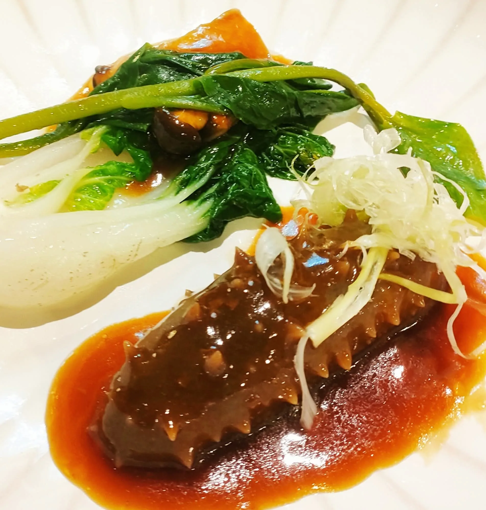

私廚和Fine Dining差在哪？
Private Chef vs Fine Dining Restaurant
重點摘要：私廚和 Fine Dining 餐廳該怎麼選？從場地、服務、客製彈性與價格比較兩者差異，幫你快速決定。
私廚跟 Fine Dining，很多人會直接聯想在一起，因為兩者都講究食材跟擺盤，但差別在於「誰主導這個空間」，這一點決定了整體體驗完全不同。
空間主導權的差異
Fine Dining 餐廳裡，主廚設計好一套完整體驗，你是被安排進這套體驗裡的客人；私廚服務裡，你的家或場地就是餐廳，主廚配合你的空間跟賓客組成去設計，主導權在你手上。
菜單邏輯的差異
Fine Dining 通常有固定套餐邏輯，客人依序體驗主廚設計的節奏；私廚的菜單可以依你的飲食禁忌、喜好、場合主題完全調整，沒有一套「必須照順序走完」的固定劇本。
兩者其實不衝突
很多客戶選私廚，其實是想把 Fine Dining 的細膩度帶進自己熟悉、隱私的空間裡，這也是我們設計菜單時常參考的方向——把餐廳等級的手藝，搬到你的餐桌上。
歡迎進一步諮詢
如果你對私廚和Fine Dining差在哪？還有其他疑問，歡迎直接聯繫舒苑團隊，會有專人依你的實際需求提供更詳細的說明與建議。
延伸閱讀
私廚與 Fine Dining 餐廳的完整比較
下表整理兩種形式在場地、客製化與費用結構上的差異，方便你依場合決定：
| 比較項目 | 到府私廚 | Fine Dining 餐廳 |
|---|---|---|
| 場地 | 您指定的場地（家中、會所、接待中心） | 餐廳用餐區 |
| 菜單客製化 | 依人數、預算、禁忌與喜好完整客製 | 固定套餐或有限選擇 |
| 隱私 | 完全私人空間，不與其他客人共用 | 與其他客人同在空間 |
| 時間彈性 | 不受翻桌時間限制 | 通常有用餐時段 |
| 費用結構 | 多為整場計價，含主廚、食材與服務 | 多以每人套餐計價 |
| 酒水與空間氛圍 | 依需求另行安排 | 餐廳提供酒單與空間氛圍 |
怎麼選？看這 4 個條件
人數多、想要隱私：10 人以上的聚會或不想與外人同場，私廚更合適。
有長輩、小孩或不便外出：在家用餐更輕鬆，也不必處理訂位與交通。
需要大量客製化：特殊飲食、主題宴會或指定菜系，私廚的彈性較大。
想體驗餐廳氛圍與酒單：人數少且想享受餐廳環境時，Fine Dining 餐廳更合適。
想了解到府服務的費用，請見到府私廚價格。
常見問題
私廚比 Fine Dining 餐廳貴嗎？
不一定。到府私廚多為整場計價，含主廚、食材與服務；餐廳多以每人套餐計價。人數較多時人均可能有優勢，人數少時包場起價則較高。 查看到府私廚價格
私廚能做到 Fine Dining 的水準嗎？
可以。私廚能用 Fine Dining 的邏輯設計菜單與上菜節奏，水準取決於主廚資歷、食材與現場準備。
什麼時候選私廚、什麼時候選餐廳？
想要隱私、客製化、人數較多，或有長輩與小孩不便外出時，適合選私廚；想體驗餐廳空間氛圍與酒單，則適合選餐廳。
想進一步了解嗎？
提供活動日期、人數與場地，我們將提供最適合的私廚方案與報價建議。